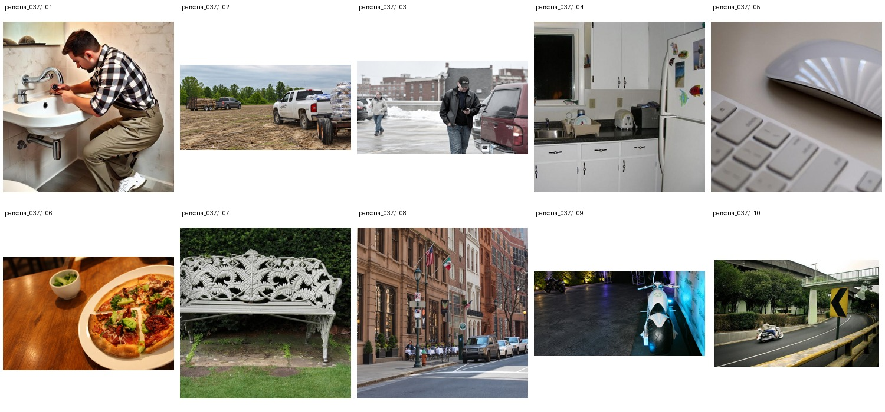

Field service technician for industrial sensor and automation systems · Associate degree in Electronics Engineering Technology · 未提供数值年龄；按职业与教育背景推定为成年人
Edison spends his weekdays troubleshooting conveyor sensors and control panels, usually with a half-finished coffee in the cup holder of his Ram. After work he’s happiest wrenching on a diesel truck, watching Giants touchdown clips, or taking his dirt bike out on muddy trails with a couple of church friends. He and his wife trade goofy marriage memes, and he tries to be the fun, steady dad who still remembers to fix the loose kitchen drawer before Sunday service. Surprisingly, he keeps a tiny notebook of drum rudiments in his toolbox and practices on a rubber pad during lunch breaks.
Add 3 · Background 7 · Remove 1 · Attribute Modification 6 · Retouch 1 · Replace 1 · Restyle 1 · Move 1
上层v3表达个性化编辑请求，底层列出操作、个性化参数及具体解析。125项global均不绑定题材或具体图片，由请求选择；人物基本信息、非global知识和图片保持不变。历史版本仅存internal；长期日常历史尚未构建。
整组图片与基础人物信息（已清理、统一字段）

{
"source": {
"dataset": "bowen-upenn/PersonaMem-v3",
"revision": "7b00a090b35b7293e6efeeb19494207f32b5a9ee",
"source_persona_id": "68",
"path": "backend/68/profile.json",
"raw_sha256": "01c48c52dec87f006c9376a1c4b436f23d091466b07b08f8d6f4731a867aebdb"
},
"basic_profile": {
"name": "Edison Bao",
"age": null,
"gender": "cisgender male, heterosexual",
"nationality": null,
"languages": [],
"location": {
"city": null,
"region": null,
"country": null,
"description": null
},
"education": {
"degrees": [
"Associate degree in Electronics Engineering Technology"
],
"fields": [],
"institutions": []
},
"occupation": {
"title": "Field service technician for industrial sensor and automation systems",
"organization": null,
"industry": null,
"status": null
},
"relationship_status": null,
"summary": null,
"biography": "Edison spends his weekdays troubleshooting conveyor sensors and control panels, usually with a half-finished coffee in the cup holder of his Ram. After work he’s happiest wrenching on a diesel truck, watching Giants touchdown clips, or taking his dirt bike out on muddy trails with a couple of church friends. He and his wife trade goofy marriage memes, and he tries to be the fun, steady dad who still remembers to fix the loose kitchen drawer before Sunday service. Surprisingly, he keeps a tiny notebook of drum rudiments in his toolbox and practices on a rubber pad during lunch breaks.",
"hobbies": [],
"personality": {
"traits": [],
"values": [],
"quirks": [],
"big_five": {
"openness": "high",
"conscientiousness": "low",
"extraversion": "medium",
"agreeableness": "high",
"neuroticism": "low"
}
},
"additional": {
"social_connections": [
{
"friend_id": "friend_1",
"display_name": "Evan Brewster",
"relationship_depth": "close",
"shared_interests": [
"dirt bikes",
"diesel trucks",
"church"
]
},
{
"friend_id": "friend_2",
"display_name": "Elias Banuelos",
"relationship_depth": "close",
"shared_interests": [
"muddy trails",
"motorcycles",
"church"
]
},
{
"friend_id": "friend_3",
"display_name": "Ernest Boehm",
"relationship_depth": "close",
"shared_interests": [
"industrial automation",
"Giants football",
"truck repairs"
]
},
{
"friend_id": "friend_4",
"display_name": "Evan Beltran",
"relationship_depth": "acquaintance",
"shared_interests": [
"diesel trucks",
"gearhead memes"
]
},
{
"friend_id": "friend_5",
"display_name": "Elaine Bowers",
"relationship_depth": "acquaintance",
"shared_interests": [
"church",
"outdoors"
]
},
{
"friend_id": "friend_6",
"display_name": "Eric Batiste",
"relationship_depth": "acquaintance",
"shared_interests": [
"blue-collar repair",
"NFL"
]
},
{
"friend_id": "friend_7",
"display_name": "Enzo Bianchi",
"relationship_depth": "acquaintance",
"shared_interests": [
"motorcycles",
"ATVs",
"diesel accounts"
]
},
{
"friend_id": "friend_8",
"display_name": "Victor Baca",
"relationship_depth": "distant",
"shared_interests": [
"conveyor sensors",
"control panels"
]
},
{
"friend_id": "friend_9",
"display_name": "Raymond Buckley",
"relationship_depth": "distant",
"shared_interests": [
"Giants football",
"gearhead posts"
]
},
{
"friend_id": "friend_10",
"display_name": "Alan Bohannon",
"relationship_depth": "distant",
"shared_interests": [
"diesel trucks",
"casual football posts"
]
}
]
}
},
"adult_eligibility": {
"status": "adult",
"basis": "adult_career_and_education_context",
"inferred": true,
"numeric_age_provided": false
},
"persona_id": "persona_037"
}